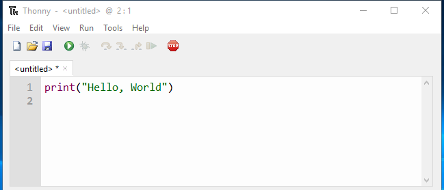
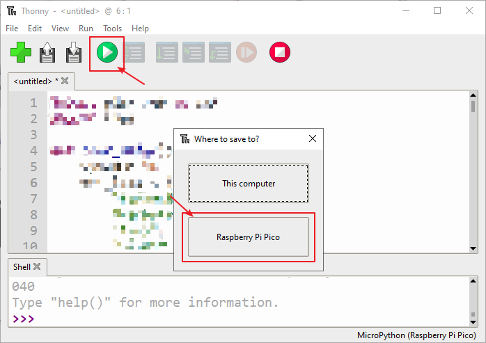
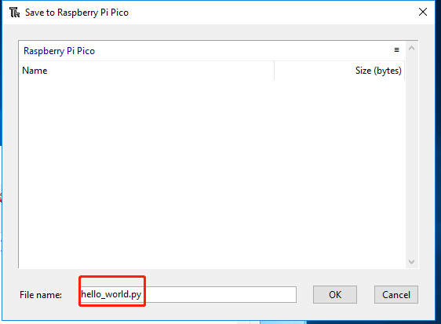

Your First MicroPython Program¶
In MicroPython, there are two options/methods for running code:
Interactive mode involves running your code directly from the Python shell, which can be accessed from the operating system’s terminal. In script mode, you must create a file, save it with .py extension, and then run your code. Interactive mode is suitable when you are running a few lines of code. Script mode is recommended when you need to create large codes and save them for next time.
Interactive Mode¶
Interactive mode, also known as the REPL provides us with a quick way to run blocks or a single line of MicroPython code via the Python shell.
Click the Python Shell area, type the following command after >>>, and then Enter.
print("Hello, World!")
Note
If your program does not run, but prints a “syntax error” message to the Shell area, then there is an error in what you have written.
MicroPython needs to write its instructions in a very specific way: miss parentheses or quotation marks, spell “print” errors, or give it a capital P, or add extra symbols somewhere in the instruction, and it won’t run . Try to type the command again and make sure it is the same as this one, and then press Enter.
You will find that the message “hello world” will be printed out immediately in the Shell area.
Script Mode¶
Interactive mode is not recommended if you need to write a long piece of Python code, or if your Python script spans multiple files. In this case, script mode can be used. In script mode, you write your code and save it with a .py extension, which stands for “Python”.
Enter the same command “print(“Hello, World!”)” in the script area, when you press the ENTER key, the program will not run, only one more blank line in the script area.

You need click “Run Current Script” or simply press F5 to run it. If your code has not been saved, a window will pop up asking to save to This computer or Raspberry Pi Pico (if your Pico is already plugged into the computer)? Also you will see MicroPython (Raspberry Pi Pico) displayed in the bottom right corner, this is the interpreter you need to select, if yours is not this one you can click on it to switch.

Note
When you tell Thonny to save your program on the Raspberry Pi Pico, if you unplug the Pico and plug it into someone else’s computer, your program is still saved on the Pico.
Choose the location you want to save, then enter the file name “hello_world” and the extension “.py”, and then click OK.

Note
You can save your code under any name, but it’s best to describe what kind of code it is, and don’t name it with meaningless names such as “abc.py”. It is important to note that if you save the code file name as “main.py”, it will run automatically when the power is turned on.
When your program is saved, it will run automatically and you will see 2 lines of information in the Shell area.
>>> %Run -c $EDITOR_CONTENT
Hello, World!
The first of these lines is an instruction from Thonny telling the MicroPython interpreter on your Pico to run the contents of the script area – the ‘EDITOR_CONTENT’. The second is the output of the program – the message you told MicroPython to print.
In Script mode, it is very easy for you to open the previously saved code again, but the code entered in Interactive Mode will not be saved and can only be re-entered. Click the open icon in the Thonny toolbar, just like when you save the program, you will be asked whether you want to save it to “This Computer” or “Raspberry Pi Pico”, for example, click “Raspberry Pi Pico” and you will see a list of all programs you save to your Pico. Find hello_world.py in the list, if your Pico is new, it will be the only file there, and click it to select it, then click OK. Your program will be loaded into Thonny, ready to edit or run it again for you.